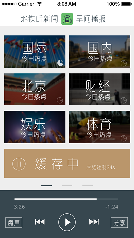
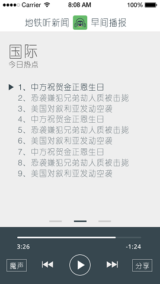

应用介绍
了解地球上的事从这里开始
地铁听新闻是一款新颖的用耳朵来享受新闻的软件，专门针对地铁用户量身打造。内容丰富、更新及时、可以让用户在拥挤的地铁中解放双手和双眼，随时随地享受新闻的乐趣。地铁听新闻只做短新闻，只告诉你当天发生了什么事儿。地铁听新闻分为国际、国内、财经、本地、娱乐、体育新闻六大板块，每天由专业主播新鲜录制，主打一键极速缓存功能，让您快速感受新闻的魅力。新闻压缩后只需非常少的存储空间，缓存最新的新闻内容时即时自动删除上次内容。地铁听新闻分为早间新闻和晚间新闻两个版本，早晚在线更新，让您上班和回家的路途不再枯燥。
顶级音质：由电视台专业的主播录制，让您享受完美的音质。
离线收听：WiFi下一键极速缓存，让您不再担心流量问题。

